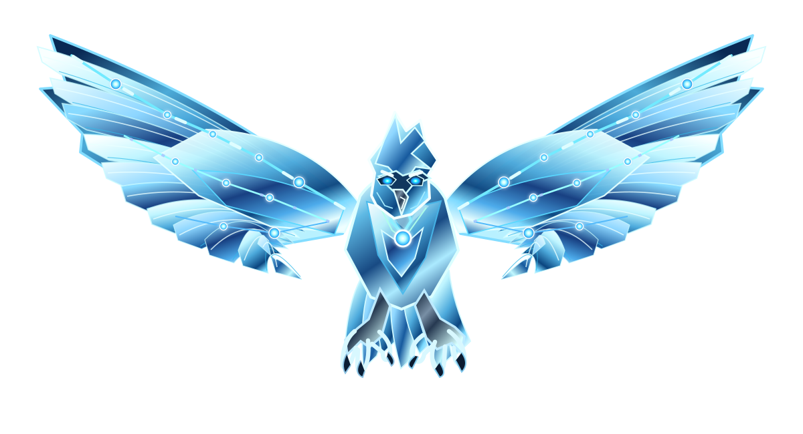

Information & identity
Records, privacy, provenance, credentials and the integrity of what we believe is true.
The things we cannot replace
A vision of resilience · QCDS
What we build can be extraordinary. What we depend on can be fragile. Glasswing is the idea that we must understand the structures holding our world together before we can truly protect them.

The threats. Attack vectors approach from many directions. The network represents investigation, testing and evidence—not a magical shield that makes risk disappear.
What we are protecting
The eagle's glass wings are a metaphor for everything a modern system carries. Each feather is a dependency. Each connection can enable extraordinary things—or become a point of failure. A wing can look intact while one hidden fracture threatens the whole flight.
Records, privacy, provenance, credentials and the integrity of what we believe is true.
Applications, machines, networks, services and the relationships that keep them running.
Choices, accountability and confidence in institutions and decisions built upon incomplete knowledge.
Not a wall. An architecture of understanding.
The luminous lines inside the eagle stand for the relationships that let QCDS investigate a system. Nodes are not decorations: each represents a condition, dependency, candidate explanation, control or piece of evidence. Their meaning comes from the constraints between them.
Describe the system and its boundaries. Separate known true (1), known false (0) and unresolved (?) conditions.
Use Oracles and constraints to shape which possible states and attack routes remain relevant.
Challenge candidate paths, rotate perspectives, test controls and recursively explore alternatives.
Bind conclusions to evidence and counter-tests. Unresolved questions stay unresolved.
The vision is substrate-independent. What can actually be executed and verified depends on the implementation. The public Security Lab uses local analysis and bounded simulation; this illustration is a conceptual model, not evidence of a quantum speedup or guaranteed protection.
No attack arrives wearing a label
The incoming traces are attack vectors: possible ways a fragile part of the system could be reached, manipulated or broken. Some are visible. Others depend on conditions we have not yet discovered. Security begins by asking what could happen, what should stop it and what would prove either claim.
Many lenses. One investigation.
STRIDE helps characterize threat types. OWASP and AppSec illuminate application failure modes. Identity, privacy, supply chains and AI systems reveal other surfaces. QCDS uses these as complementary perspectives over the same conditions, candidate routes and evidence, rather than treating any checklist as complete.
04 / THE VISION
Project Glasswing imagines protection as a continuously revisable understanding of the system: what it is, what can threaten it, which controls matter and what the available evidence actually supports.
QCDS does not promise invulnerability. It provides a direction: from isolated checklists and assumptions toward connected conditions, recursive challenges and truth-aligned decisions.
Enter QCDS Security LabExplore the actual Security Lab and its integrated Glasswing inference-method comparison. This standalone page communicates the vision; it does not run or certify a security assessment.